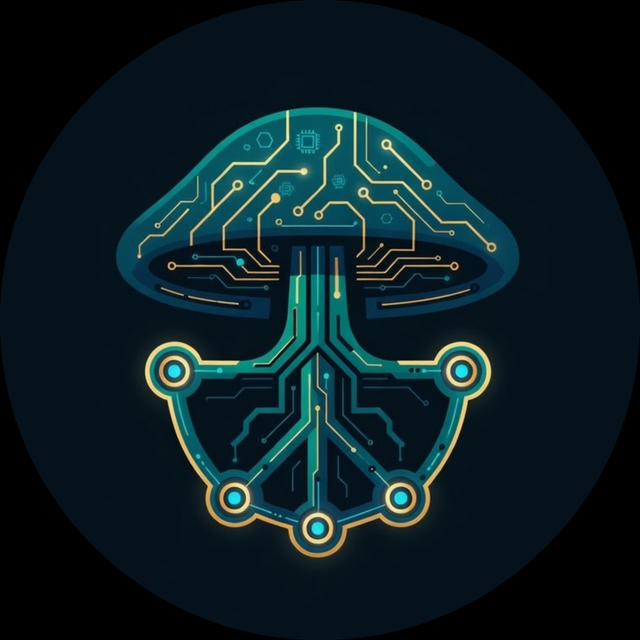

MYCELINK.ECO / FREE FOR THE COMMUNITY

The network beneath
the market.
Four trusted crypto tools, wired into one free home for the Mycelink community.
DexScreener
Live prices and charts for tokens on decentralised exchanges.
NODE 02 / MARKETSCoinMarketCap
Rankings, prices and market caps across coins.
NODE 03 / CHARTSTradingView
Advanced charting and technical analysis tools.
NODE 04 / ON-CHAINCheckonchain
On-chain Bitcoin charts and cycle data.
MEMBERS · COMING NEXT
Your own private profile
Each member will sign in and see only their own saved charts and settings.
ADMIN · COMING NEXT
A view of the whole community
The Mycelink admin will see what members save and use. Every member is told this clearly before they sign up.